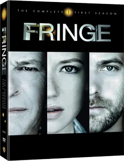

The genetics
The episode's genetic element is a man-made contagion used as a weapon. The bioterrorist group ZFT, funded by the Massive Dynamic founder William Bell, deliberately infected Valerie Boone to force her husband, a pharmaceutical executive, to work for them; the agent, linked to an extinct strain of syphilis that his company had acquired, alters her body so that she needs other people's spinal fluid and grows fangs, turning her into a killer. The sources do not explain the contagion in genetic terms, beyond ZFT's interest in using it as a carrier to alter people. The cure is the work of two scientists: Nicholas Boone, who collaborated with terrorists but is presented sympathetically as a man who sacrifices his life for his wife, and Walter Bishop, who develops an augmented penicillin with him. The episode thus sets a cruel bioterror group against scientists who use their skills to save a victim. Spinal-fluid hunger caused by a syphilis strain is pure fiction.
How genetics is portrayed
- Overall portrayal of genetics
- mixed A cruel bioterror group is set against scientists who use their skills to save its victim, the good-against-bad pattern.
- Outcome of the genetic intervention
- mixed The contagion turns Valerie into a killer who murders several people, but the cure saves her, at the cost of Boone's life.
- ZFT
- villain Aim: malevolent, power (negative). The bioterrorist group infects Valerie with a contagion to coerce her husband and wants it as a carrier to alter people; the episode presents it as cruel and manipulative.
- Nicholas Boone
- ambivalent Aim: personal, benevolent (positive). The pharmaceutical head worked for ZFT but devotes himself to curing his wife, sacrificing his legs and finally his life; the episode presents his sacrifice as an act of love.
- Walter Bishop
- hero Aim: benevolent (positive). Walter identifies the agent and develops the augmented penicillin cure with Boone, saving Valerie.
The story
In this Fringe episode, a man is found dead with his spinal column severed and his spinal fluid drained, and Walter finds human bite marks and an extinct strain of syphilis in the killer's saliva. The strain leads to Lubov Pharmaceutical, which bought biological samples useful for weapons, and to its head, Nicholas Boone, who admits to working for the bioterrorist group ZFT. When he refused to cooperate, ZFT infected his wife, Valerie, with a contagion that makes her burn through spinal fluid, so that she must kill to survive; Boone has already lost the use of his legs trying to cure her with his own fluid. Boone works with Walter on a cure, an augmented penicillin, and secretly gives more of his spinal fluid than he can spare. Olivia and Peter track Valerie with thermal imaging and capture her, and the cure saves her, but Boone dies. In a recorded message, he reveals that ZFT is funded by William Bell, founder of Massive Dynamic.